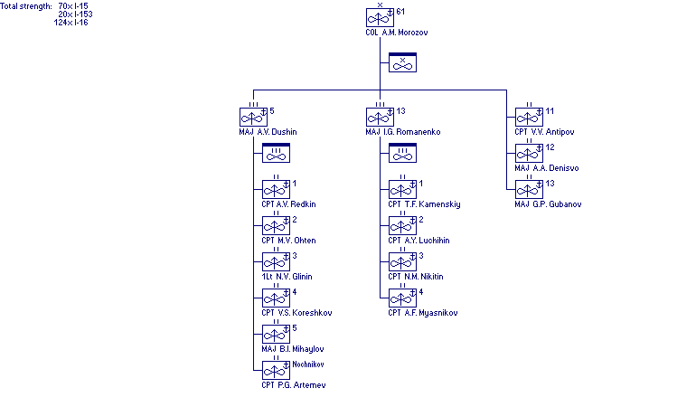

World War II Armed Forces — Orders of Battle and Organizations
Last Updated 29.01.2006
Soviet Navy
In cooperation with Marek Suplat
Order of Battle
Baltic Fleet
Naval Aviation
61st Fighter Brigade
30 November 1939
